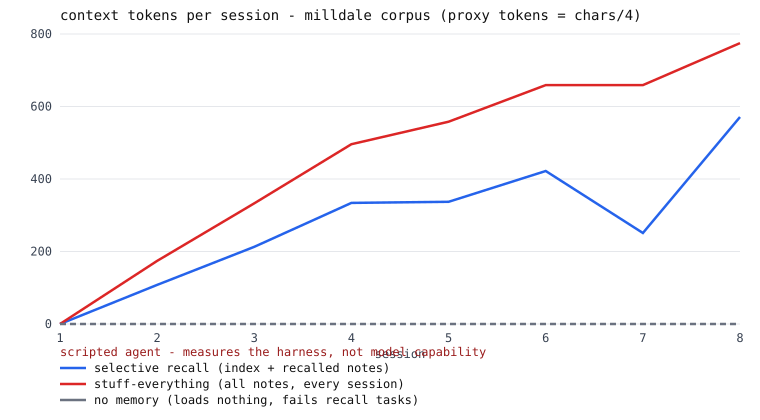
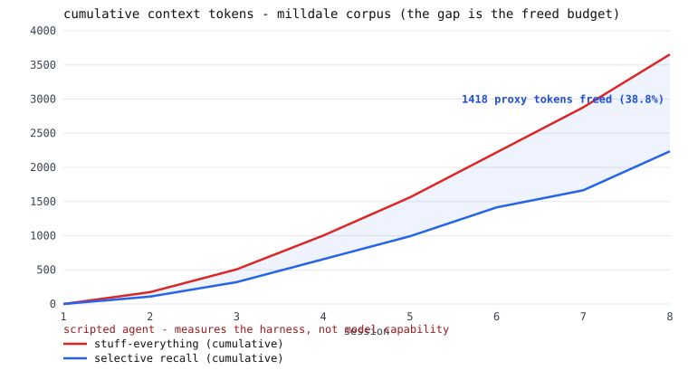

Long-term memory for AI agents as a human-readable markdown wiki: an index skimmed at session start, selective recall of only the notes a task needs, and notes that get extended — or thrown out, with a written reason — as they prove right or wrong.
The concept of agent memory as a self-maintained markdown wiki is Andrej Karpathy's (attribution, no affiliation). This lab builds it small — and then measures it.
Every session runs the same five beats. Click a stage.
These lines are quoted from the committed transcripts
(runs/) that CI regenerates on every push. Step through the story —
including the moment the memory deletes something it learned was wrong.
Verbatim excerpts from runs/milldale-session_02/04/06/07.md, lightly condensed between beats.
The full table lives in the README, rendered from
metrics.jsonl by report.py — no measured number is typed
by hand, and the CI drift gate fails the build if regeneration disagrees.
Context tokens over 8 sessions: 2,236 vs 3,654 (proxy tokens = chars/4). The ratio is the claim, not the absolute counts.
On a small 8-note corpus, stuffing wins — the index is a standing per-session tax. Published on purpose: a claim without its boundary isn't finished.
Labeled an upper bound by construction in the same row — the same author wrote tasks, hooks, and labels. One miss is planted to show what a lazy hook costs.
The exact-title matcher's confusion table. A paraphrased duplicate slips past it — counted and published, not papered over.

The hero chart — its legend carries the disclaimer inside the SVG, so it survives screenshots: “scripted agent — measures the harness, not model capability”.

The cumulative view — the shaded gap is context budget freed, and it widens as the wiki grows: stuffing scales with corpus size, selective recall scales with the task's working set. Regenerated by CI like every other number here.
git clone https://github.com/LZBiala/wiki-memory-lab cd wiki-memory-lab pip install -e .
The runtime is Python stdlib only — the empty dependency list is a feature.
python -m wikimemlab demo
Eight sessions stream in seconds: index loads, selective recalls, write-backs, the prune with its written reason, the decay. Then the token curves are regenerated in front of you.
wiki/ ← the agent's memory: index.md + one note per concept runs/ ← transcripts + ops.jsonl (every operation, with a reason) report/hero.svg ← the curves you just computed
No database, no viewer app. What does my agent believe should be an
ls, not a research project.
agents.Agent is the interface: implement
choose_recall() and answer() with a live model and
run the same harness. No live adapter ships in v1.0 — deliberately, so no
published number can be mistaken for model judgment.
The bundled agent is scripted. A scripted agent that is told to use memory, using memory, proves nothing about intelligence — so this project never publishes a “task completion” curve, because completion tracks retrieval by construction. What the harness measures honestly is the memory protocol itself: token arithmetic, retrieval quality of one-line hooks against labeled tasks, and whether merge, prune, and decay fire when they should — including both directions the title matcher fails.